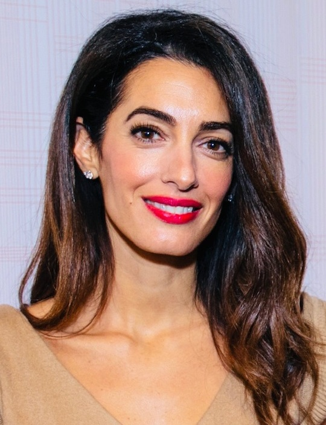

Amal Clooney
Un site de fans consacré à son parcours et à ses engagements pour la justice.

Qui est Amal Clooney ?
Amal Clooney est une avocate spécialisée en droit international et en droits humains. Après des études de droit à Oxford puis à l’université de New York, elle a été admise au barreau de New York en 2002, puis à celui d’Angleterre et du pays de Galles en 2010.
Parmi les personnes qu’elle a représentées figure Nadia Murad, survivante yézidie et lauréate du prix Nobel de la paix en 2018. Amal Clooney a également représenté d’autres survivantes de violences sexuelles.
Source : Doughty Street Chambers : biographie d’Amal Clooney
Une fondation pour la justice
En 2016, Amal et George Clooney ont cofondé la Clooney Foundation for Justice. L’organisation apporte notamment une aide juridique pour défendre la liberté d’expression et les droits des femmes.
Source : Clooney Foundation for Justice.